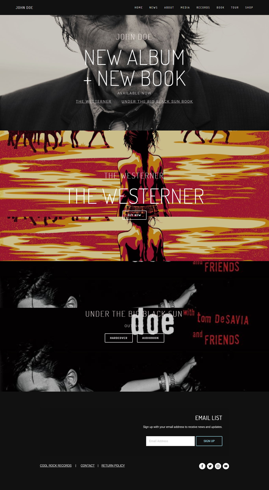

Proposal
Purpose:
The task was given to us in week 12 where we just needed to outline a site with HTML and CSS property. It is an individual task which conveys forty levels of the aggregate evaluations. The task is to outline an individual site of which we are natural of.
The site depends on an individual page which comprises of no less than six unique pages. Fundamentally, my own understanding, detail are incorporated into this website page. It's constantly simple to accomplish something that you know the most.
Problem statement:
This coursework incorporates sites of no less than six site pages utilizing HTML and CSS as indicated by our coursework however I had utilize some JavaScript it would be best. The site contains no less than six website pages with route bar, header, footer, body and pictures. These and different instruments will be utilized by the necessity of the site. This will prompt a few chances to demonstrate our believability.
Aims:
Our point is to plan a site of a reasonable association utilizing HTML and CSS . With this, there are no less than 6 pages that are connected with the outlined site. The principle expect to plan a site is to make it easy to use and the group of onlookers of the site will increment.
Objectives:
1. To have the capacity to plan site independently.
2. To take in the idea of HTML and CSS.
3. To make the site easy to understand for the center crowd.
Proposed Approach:
Right off the bat, an unpleasant draw of the format of the site will be made which when is right will be executed on html. By this we will make an easy to use site. For this, a portion of the books identified with HTML (Hypertext markup dialect) will be utilized as a kind of perspective. The models of the site will soon be made well ordered. With this, the coursework will be arranged day by day little by little to hand it in before the accommodation day i.e. week 12.
Target audience:
This coursework will help the following group that will manage HTML. It can demonstrate to them the right direction which will be a sort of fascination and will build the fixation with significantly more intrigue. It may help them with their examination on the off chance that they are making a site with comparable subjects.
Timescale:
The coursework was given to us in week 12 and need to finish it inside in week 12. It is separated into parts as it will be less demanding to bargain and comprehend. Research, coding, and testing will be done on the second and a week ago with some last touch up. In the event that the work goes ahead as arranged, at that point the coursework will be finished before the accommodation date.
Table of Contents
Introduction: 1
Discussion and analysis:2
Wireframes: 2
Home: 2
Services: 3
Products: 5
About Us: 5
Contact: 6
Webpage: 7
Home: 7
About: 8
CV: 9
Social: 10
Contact: 10
Research: 11
Conclusion: 17
Work cited: 18
Introduction:
Discussion and analysis:2
Wireframes: 2
Home: 2
Services: 3
Products: 5
About Us: 5
Contact: 6
Webpage: 7
Home: 7
About: 8
CV: 9
Social: 10
Contact: 10
Research: 11
Conclusion: 17
Work cited: 18
This task depends on web outlining with the assistance of HTML (Hyperlink Markup Language). Data framework is a framework engaged with putting away, arranging and investigating the information which makes it helpful to survey and work on the handled information in a basic way. This is the main HTML related one.
HTML is a markup dialect and makes utilization of different labels to design the substance (Anon., n.d.). CSS (Cascading Style Sheets) is utilized to compose designing directions while JavaScript is utilized as a part of web improvement. These components help us to plan a particular site. A site is just arrangement of pages of data about a specific subject, distributed by a solitary individual or association which is available through the web or other system utilizing a web program. (Anon., n.d.) A site comprises of a few pages which is composed utilizing HTML and CSS.
The site was made of an individual resume and Curriculum Vitae. The choice to outline a site on CV and individual points of interest. CV characterizes about the portfolio which gives us individual detail. It manufactures new picture in site to appear about the individual detail which will help construct new portfolio . The examination parcel was very basic as there is part of various portfolio destinations.
As a matter of first importance, the wireframe of the site was made to outline the structure of the site. The site was produced utilizing HTML and styled and enlivened by CSS. The site contains 6 site pages i.e. Home, About, CV, Social , Model and Contact. All pages contain extraordinary substance of individual detail. These pages are interlinked with each other. After the finishing of web architecture it is trailed by exchange and examination where a short depiction of the site and the dialect used to assemble it was clarified. The examination divide contains six sites which was taken as a kind of perspective that made individual detail.
Discussion and analysis:
The task was given to us in week 12. From that point onward, our module educator began to extemporize us in managing the issues that emerges amid the task. The task was to outline a site of individual resume and CV. Everything now can be found in web. Individuals can undoubtedly locate our own detail without leaving their solace which is at home. They would now be able to locate my own detail that they need with only a couple of ventures by perusing them on the web. These sites have made it more advantageous and efficient.
For this we utilized HTML (Hypertext Markup Language) which is a standard markup dialect for making website pages. These are building squares of HTML page which are spoken to by labels. HTML utilizes these labels to render the substance of the page. To brighten and style the website pages, we utilize CSS. Extra highlights are included utilizing JavaScript which is essentially a content dialect that flies up a window when connected to page.
Most importantly, to outline a site we have to make a wireframe. It is a screen outline that exhibits the skeletal structure (system) and substance of the site. It demonstrates the structure of the pages with no illustrations including what pages to connect where.
Home:
The main wireframe is the landing page. It contains name as logo and menu-bar in the other segment. This is trailed by route bar that contains Home, About, CV, Social , Model and Contact in Hamburger menu bar and photo of this page is whole covered with the page except footer part. At that point the body part contains some valuable articles about my own detail. At that point, the footer contains '@Copyright' and fueled by the web-designer.
Figure: 1 Contact
About:
he second wireframe is of the page About. It contains logo and menu-bar contain picture in the header area. This is trailed by route bar that contains Home, About, CV, Social , Model and Contact. The body part contains content and picture. In this page, the body part contains message and in addition picture of individual detail. At that point, the footer contains '@Copyright' and controlled.
Figure: 2 Contact
CV:
The third wireframe is CV(Curriculum Vitae). It contains logo and menu-bar contain picture in the header segment. This is trailed by route bar that contains Home, About, CV, Social , Model and Contact. The body part contains individual detail like expericence and degree. At that point, the footer contains '@Copyright' and fueled.
Figure: 3 Contact
Social:
The fourth wireframe is Social. It contains logo and menu-bar contain picture in the header segment. This is trailed by route bar that contains Home, About, CV, Social , Model and Contact. The body part contains an alluring symbol of various online networking joins like facebook, github,reddit, connected and so forth. At that point, the footer contains '@Copyright' and fueled.
Figure: 4 Contact
Contact:
The fifth wireframe is Contact. It contains logo and menu-bar contain picture in the header area. This is trailed by route bar that contains Home, About, CV, Social , Model and Contact. The body part contains a frame that is filled if the guest with recommendations and his/her subtle elements. At that point, the footer contains '@Copyright' and controlled.
Figure: 5 Contact
Webpage:
This is the personal site named 'CHIRAYU' which is my name. This personal page name is put according to my name. The perosnal-continue is about my own particular experience and individual detail. The site is planned with HTML and adorned and styled with CSS including highlights from JavaScript utilizing Sublime content. Each page are composed with interesting foundation and distinctive picture. The pages of route bar beneath the header are interlinked with each other. The body parts of these pages are distinctive with each other. The site is made easy to understand and for guests for my own utilization. This site is more advantageous and efficient with respect to my guests safe place. They can without much of a stretch unwind at home and read my diverse pages which they need to have which is only couple of snaps away. Following are the screen captures of the sites.
Home:
This is the screenshots of the home page.
Figure : 6 Home Page
About:
This is the screenshot of second page About.
Figure: 7 About
CV:
This is the screenshots of third page CV.
Figure: 8 About
Social:
This is the screenshot of the page Social links.
Figure: 9 Social links
Contact:
This is the last page of the website. i.e. Contact.
Figure: 10 Contact
Research:
It took a lot of time to develop this website as it was the first time that I had ever attempted. This was achieved due to the research portion. I gathered information from the related websites that I had took as a reference. Mostly all of the websites are related to personal detail which made easier to detect the strength and weaknesses of the websites. It also gave a lot of ideas that helped me to develop the website. Following are the websites that I took as a reference for research.
1. John Doe( http://www.theejohndoe.com/)
John Doe was born in 1977 when he arrived in Los Angeles. His previous life in Tennessee, Wisconsin & Baltimore was a great & fertile time but new music and social changes led him to events that created a life in art. He graduated from Antioch College in Baltimore in 1975, worked as a roofer, aluminum siding mechanic, and ran a poetry reading series. Ms. Meyers was his landlord in the rural black community of Simpsonville , MD.
Strength:
1. Attractive homepage.
2. Detailed information of the website is given.
3. Use of form in the Contact webpage.
Weakness:
1. Preview size of image is small.
2. Lack of text information.
3. Unorganized content of the pages.
2. Devno Stank (https://www.devonstank.com/)
Devon Stank path as a Front-End developer has led his to a focus in Ruby on Rails and Square space development. During the warmer months, he enjoys traveling to some great downhill mountain biking locations or finding a remote lake somewhere new for kayaking. Although the majority of the year, you will find his behind a computer screen. He is a passionate gamer which has had a huge impact on the start of my career, but that's a story for another time.
So, with the success of Devonstank.com, I had to come up with a new platform for all of the growth. SQUAR is a human-first, creative digital agency, located in Harrisburg, PA. This means we focus heavily on users to help spark that emotional response that has so much power to generate a reaction. We say this in one of our promotional videos, but we truly stand by that. Our focus will still be Squarespace development, but will be expanding our services much further in 2018.
Strength:
1. Attractive homepage.
2. Different effects in photos.
3. Brief description of the mission, values and their tasting success.
Weakness:
1. Lack of use of form.
2. Large header and contents.
3. The website feels outdated.
3. Anthony Wiktor
Anthony is creative director and marketer with a decade of success engaging, inspiring and activating audiences to drive demand for brands. His multi-disciplinary creative studio based in Hollywood is known for creating consumer centric, imaginative, and conceptual design with a love for storytelling. Anthony has also worked in a diverse array of industry verticals— fashion, motion pictures and television, finance, real estate, foods, hotels and hospitality, video gaming, tech (hardware and software), entertainment news, and business services — winning numerous awards along the way including a 2017 Webby Award.

Strength:
1. Drop down navigation bar.
2. Detailed explanation.
3. Use of forms.
Weakness:
1. Same frame on all the pages.
2. Large headers and footers.
3. Huge fonts.
Conclusion:
This coursework took a normal of 12 weeks. The current work was genuinely simple as the module instructor had legitimately shown us in regards to the module and the different applications that would be engaged with the consummation of the coursework. The coding was to be finished utilizing HTML and CSS. Because of the surely knew learning got of HTML in general, it turned out to be exceptionally basic while planning the site utilizing HTML. Obviously it was tedious as different mistakes emerged for the most part because of wrong utilization of HTML labels or while utilizing incorrectly techniques on particular strategy based codes. At first there was issue in the running of the codes since most codes would not appropriately keep running in web traveler and we didn't have any acquaintance with it ought to be in an ideal situation keep running in chrome. This likewise made a great deal of disarray while planning the website page.
The documentation was very simple however was exceptionally tedious and a great deal of clarification was required. The delineation of the codes, drawing wireframes, disclosing wireframes additionally added to the pressure. We likewise needed to give screen captures of the last pages and clarify them as needs be. Gratefully the work was done and over with inside due time and that was a significant alleviation.
This coursework was exceptionally useful as it was another experience and the learning picked up from this would be useful in future assignments and additionally in the particular bearers in our future. The help and direction of the module pioneer should likewise be considered since the site would not have accomplished this level of flawlessness notwithstanding her assistance. So, this coursework built up a solid base in HTML based site making related work.
Visited Site
Visited Site:
Anon., n.d. [Online]
Available at: https://www.tutorialspoint.com/html/html_overview.html
Anon., n.d. [Online]
Available at: http://dictionary.cambridge.org/dictionary/english/page
Anon., n.d. [Online]
Available at: http://www.theejohndoe.com/
Anon., n.d. [Online]
Available at: https://www.devonstank.com/
Anon., n.d. [Online]
Available at: http://anthonydesigner.com/